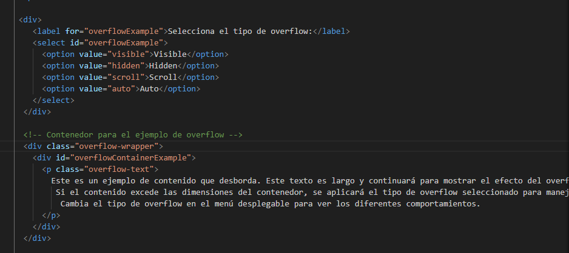
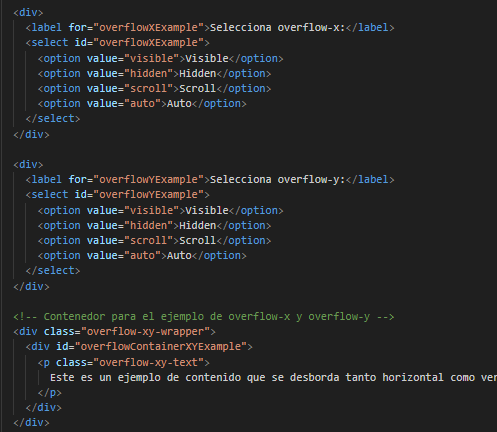

Se refiere al comportamiento por ejemplo al de una ventana como las de windows, cuando su contenido
desborda el area visible de su contenedor, y tiene varios valores:
visible: El contenido que desborda se muestra fuera del contenedor.
hidden:El contenido que desborda se oculta.
scroll: El contenido que desborda se muestra con una barra de desplazamiento.
auto: Solo muestra barras de desplazamiento si el contenido realmente desborda.
El siguiente es el codigo del ejemplo en HTML, CSS y JavaScript, para overflow
Este es un ejemplo de contenido que desborda. Este texto es largo y continuará para mostrar el efecto del overflow en el contenedor. Si el contenido excede las dimensiones del contenedor, se aplicará el tipo de overflow seleccionado para manejar el desbordamiento. Cambia el tipo de overflow en el menú desplegable para ver los diferentes comportamientos.
Overflow es un shortHand de las propiedades overflow-x y overflow-h
si vez texto sobre texto solo selecciona hiden
Este es un ejemplo de contenido que se desborda tanto horizontal como verticalmente. El texto es largo y continuará para demostrar cómo `overflow-x` y `overflow-y` controlan el desbordamiento en cada dirección de forma independiente. Ajusta los valores en los menús desplegables para ver cómo afectan la visualización del contenido.
IMPORTANTE: La inversión entre overflow-x y overflow-y ocurre cuando el navegador, al limitar el contenedor
en ambos ejes (con width y height), interpreta ambiguamente el desbordamiento debido al flujo de contenido
y al modelo de caja. Esto sucede especialmente si el contenedor no usa box-sizing: border-box, ya que el
padding y border pueden aumentar el tamaño total y provocar que el desbordamiento se gestione en el eje incorrecto.
El siguiente es el codigo del ejemplo en HTML, CSS y JavaScript, para overflow en x and y
